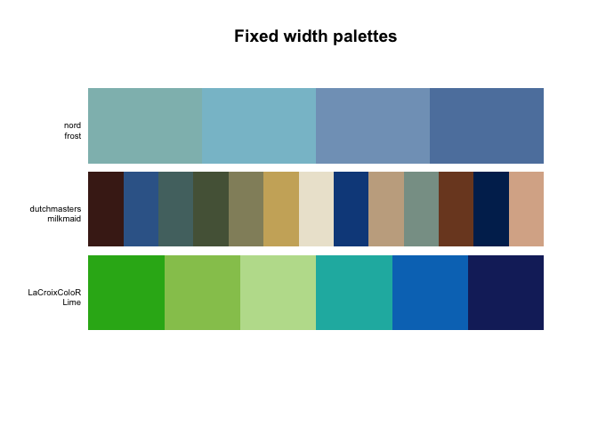
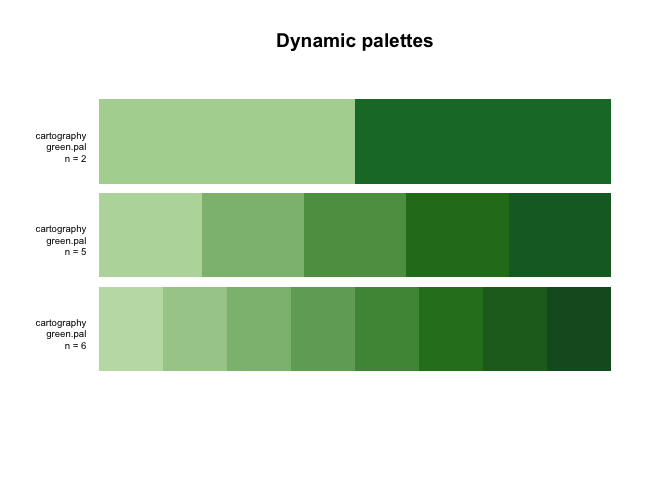
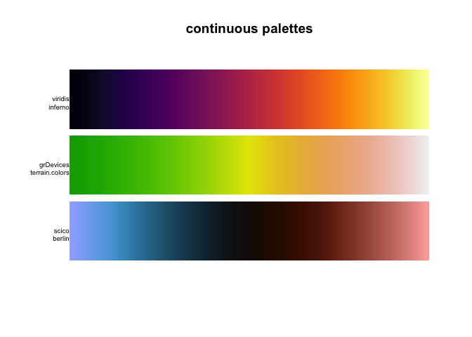
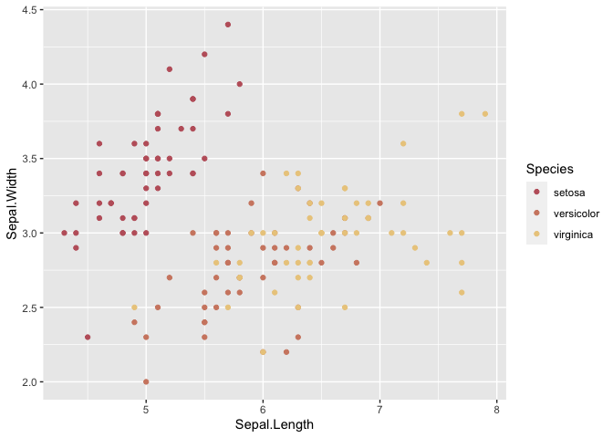

The goal of paletteer is to be a comprehensive collection of color palettes in R using a common interface. Think of it as the “caret of palettes”.
Notice This version is not backwards compatible with versions <= 0.2.1. Please refer to the end of the readme for breaking changes
Installation
You can install the released version of paletteer from CRAN with:
If you want the development version instead then install directly from GitHub:
Palettes
The palettes are divided into 2 groups; discrete and continuous. For discrete palette you have the choice between the fixed width palettes and dynamic palettes. Most common of the two are the fixed width palettes which have a set amount of colors which doesn’t change when the number of colors requested vary like the following palettes:

on the other hand we have the dynamic palettes where the colors of the palette depend on the number of colors you need like the green.pal palette from the cartography package:

Lastly we have the continuous palettes which provides as many colors as you need for a smooth transition of color:

This package includes 1759 from 50 different packages and information about these can be found in the following data.frames: palettes_c_names, palettes_d_names and palettes_dynamic_names. Additionally this github repo showcases all the palettes included in the package and more.
Examples
All the palettes can be accessed from the 3 functions paletteer_c(), paletteer_d() and paletteer_dynamic() using the by using the syntax packagename::palettename.
paletteer_c("scico::berlin", n = 10)
#> <colors>
#> #9EB0FFFF #5AA3DAFF #2D7597FF #194155FF #11181DFF #270C01FF #501802FF #8A3F2AFF #C37469FF #FFACACFF
paletteer_d("nord::frost")
#> <colors>
#> #8FBCBBFF #88C0D0FF #81A1C1FF #5E81ACFF
paletteer_dynamic("cartography::green.pal", 5)
#> <colors>
#> #B8D9A9FF #8DBC80FF #5D9D52FF #287A22FF #17692CFFAll of the functions now also support tab completion to easily access the hundress of choicses

ggplot2 scales
Lastly the package also includes scales for ggplot2 using the same standard interface
library(ggplot2)
ggplot(iris, aes(Sepal.Length, Sepal.Width, color = Species)) +
geom_point() +
scale_color_paletteer_d("nord::aurora")
Breaking changes
In version <= 0.2.1 a palatte was selected by specifying a package and palette argument like so
After version 0.2.1 palettes are selected using the syntax "packagename::palettename" inside the palette functions.
Special thanks
- Hadley Wickham For helpful code improvements.
Included packages
paletteer includes palettes from the following packages: